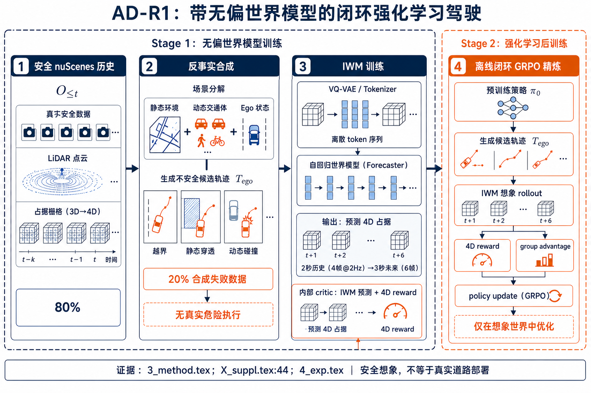
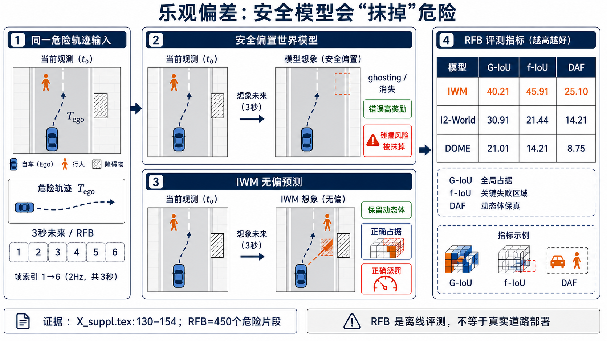
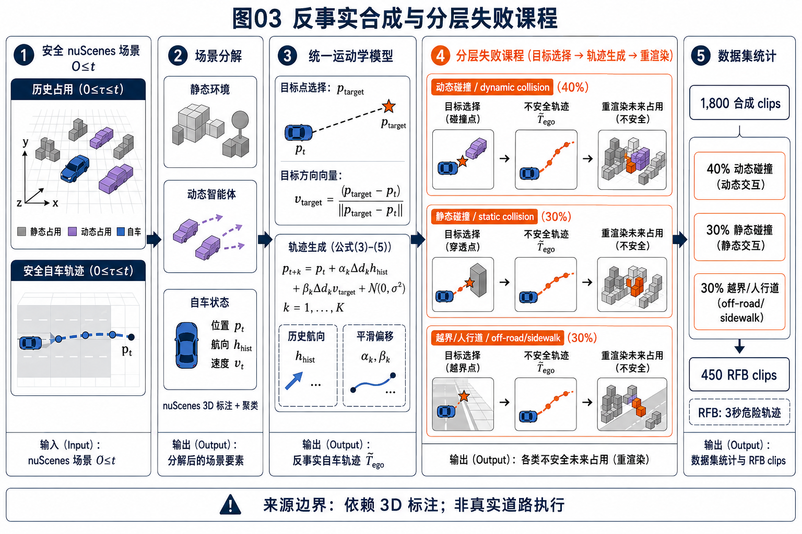
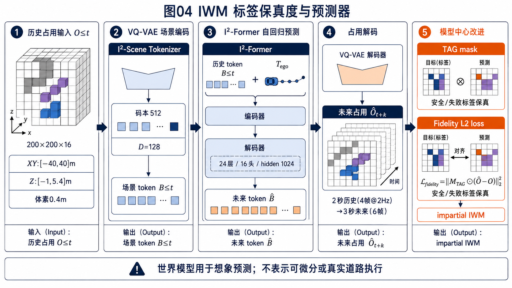
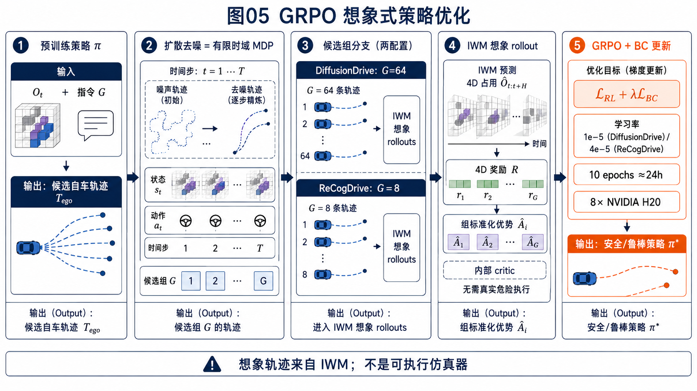
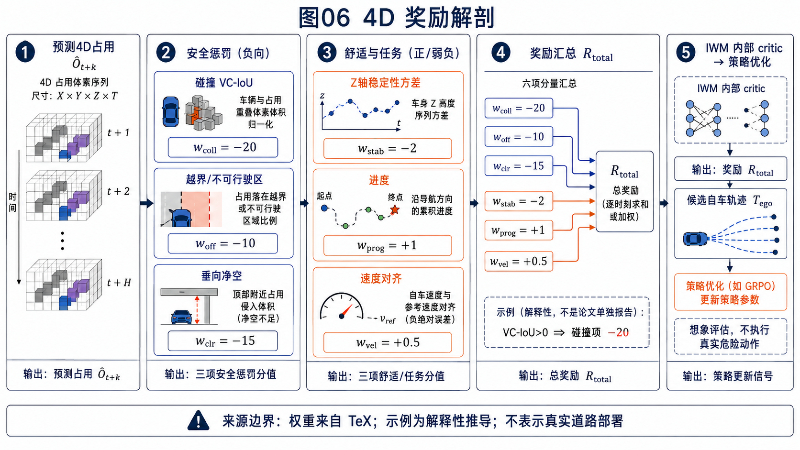
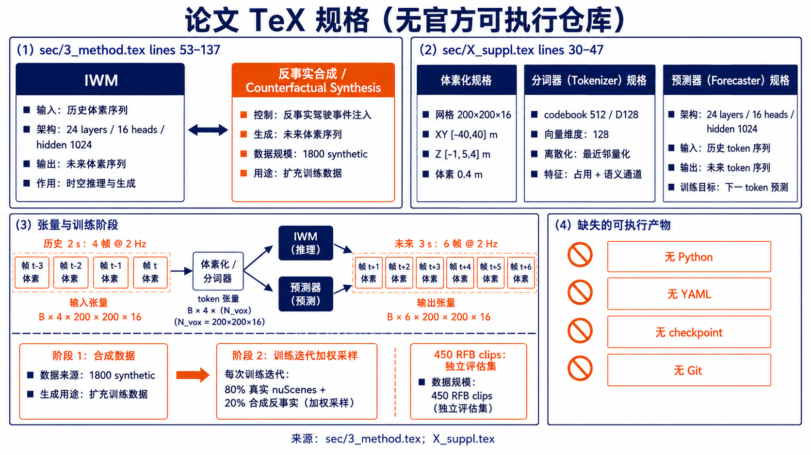
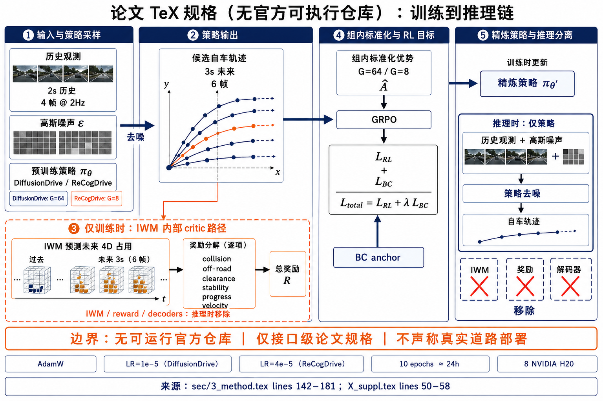
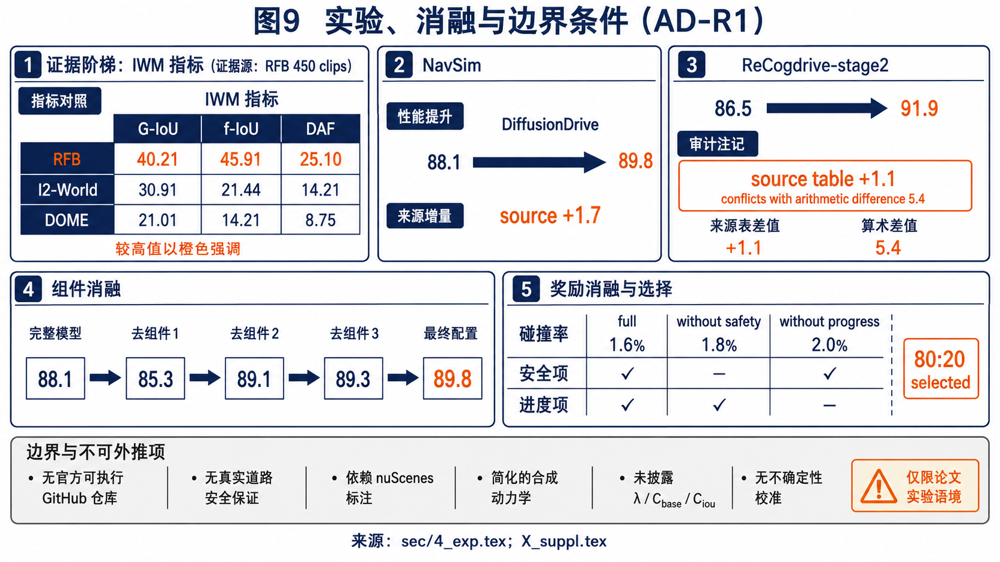

AD-R1：闭环强化学习与不偏置世界模型的机制精读
本文依据 arXiv:2511.20325v3 的官方 HTML、PDF 与 TeX 源包整理。AD-R1 的核心命题是：只用安全专家数据训练的世界模型会对危险动作产生乐观幻觉，进而把错误的未来交给强化学习；通过反事实合成、轨迹保真约束和 4D 占用奖励，模型可以在离线想象闭环中暴露风险。全文将“论文明确陈述”“由公式直接推出的解释”和“证据边界”分开书写。
版本身份是 2026-03-11 修订的 v3，arXiv DOI 为 10.48550/arXiv.2511.20325。TeX 使用 CVPR 2026 模板，但 arXiv 元数据没有正式会议录记录，因此本文称其为 arXiv 预印本/ CVPR-2026-template submission。作者列表以 PDF 与 TeX 为准：Tianyi Yan、Tao Tang、Xingtai Gui、Yongkang Li、Jiasen Zheng、Weiyao Huang、Lingdong Kong、Wencheng Han、Xia Zhou、Xueyang Zhang、Yifei Zhan、Kun Zhan、Cheng-zhong Xu、Jianbing Shen；arXiv Atom 元数据把第五作者拼为 “Jiasen Zhesng”，这是保留的元数据不一致。
一、问题：安全数据造成的乐观世界
端到端驾驶策略通常从相机、占用或多传感器历史中直接预测未来轨迹。若强化学习在真实模拟器里试错，碰撞和越界代价可以由环境返回；但 AD-R1 讨论的后训练路径使用学习到的世界模型来想象未来。这里存在一个结构性风险：nuScenes 的专家轨迹大多是安全的，模型在训练分布内只看到“路面保持可行驶、障碍物持续存在”的样本。将一个会撞向行人的候选轨迹输入该模型时，它可能把行人从未来占用中抹掉，或者把自车自动挪回车道。这不是策略真的安全，而是评价器不再忠实。
问题形式化为策略从观测历史和导航命令生成自车轨迹，并最大化奖励：
世界模型接口将历史观测和候选轨迹映射成未来三维占用序列：
这两个式子之间的关键契约是“轨迹条件性”：同一历史下，候选轨迹不同，未来占用必须随之变化。若模型忽略轨迹，奖励就不能区分急转、穿越人行道和正常跟车。AD-R1 因而把 IWM 设计为内部 critic，而不是把它描述成真实物理仿真器。

全部细节：图 1 的分区、节点、箭头与证据边界
左上分区是安全 nuScenes 历史，节点标记 O_{<=t}、导航命令 G 和专家自车轨迹；箭头进入数据混合器，明确写出每次采样为真实安全数据 80%、合成失败数据 20%，这表示 weighted sampling 而非两个数据池的绝对数量比例。左下分区是 Counterfactual Synthesis，将静态环境、动态 agent、自车状态拆开，产生 off-road、static penetration、dynamic collision 三类候选。中部 IWM 训练区包含 scene tokenizer、I2-Former 风格自回归 forecaster、预测 4D occupancy 和 fidelity loss；箭头从历史与候选轨迹同时指向模型，强调轨迹条件。右侧离线 RL 区画出扩散策略去噪、候选组、IWM imagination、4D reward、group advantage 和 policy update 的闭环箭头。最右边输出是 refined policy，不连接真实危险执行器；图内注释“无物理不安全执行”。这张图的证据来自 3_method.tex Sec.3.1-3.3 与 X_suppl.tex 的实现表，不能解释成可微世界模型或真实道路部署图。
二、IWM：从体素压缩到轨迹条件的未来占用
IWM 沿用 I2-World-inspired latent architecture，但论文没有提供可执行实现。第一阶段是 4D scene tokenizer：把连续时间的占用体素压缩为离散 latent tokens；第二阶段是 encoder-decoder Transformer，以历史 token 自回归预测未来 token，再解码为占用。补充材料给出网格为 200 x 200 x 16，X/Y 范围 [-40,40] m、Z 范围 [-1,5.4] m，体素边长 0.4 m。VQ codebook 为 512 个向量、embedding 维度 128；forecaster 有 24 个 attention layers、16 heads、hidden size 1024。输入历史 2 s（4 帧、2 Hz），未来 3 s（6 帧），因此常见配置 K=6，但主公式保留一般 K。
这种 latent 设计的作用不是单纯节省显存，而是给占用预测提供时空压缩的中间坐标。自回归展开时，前一时刻预测 token 会成为下一步条件，任何早期“障碍物消失”都会沿时间传播。因此 AD-R1 把反事实失败样本加入 tokenizer/forecaster 的训练分布，让模型在危险区域也有可见证据。
Counterfactual Synthesis 首先从 nuScenes ground-truth 3D annotations 分离静态环境、动态 agents 与 ego state，再使用统一运动学模型生成不安全轨迹，并通过刚体变换/插值把占用重新渲染到未来。作者明确承认这种流程依赖标注，是当前限制；未来设想是用高保真感知系统替代标注输入。合成池共有 1,800 clips，失败组成 dynamic collisions 40%、static collisions 30%、off-road/sidewalk 30%；另有独立 450 clips 的 RFB 评估集。这里的百分比是合成池配比，不能外推真实事故分布。
目标方向定义为单位向量：
混合运动学位置把历史航向和目标方向按时间系数组合，并加入高斯扰动：
随后刚体变换/插值得到反事实占用：
三式的关系只能按论文叙述理解为“方向与位置采样，再由变换渲染占用”。TeX 没有给出每个 target strategy 的参数表，也没有声明式 (3) 的单位方向与式 (4) 的 alpha/beta 存在逐项映射；更不能把二者拼成额外的可执行函数。运动学是简化线性/恒速近似，复杂交互的真实性属于证据边界。

全部细节：图 2 的分区、节点、箭头与证据边界
左侧输入区固定同一段历史和一条红色危险轨迹；上方“safe-only baseline”分支画出行人/路障在未来帧逐渐消失，箭头指向错误的无碰撞 occupancy。下方 IWM 分支保留动态 agent、静态边界与越界地面，箭头指向 failure volume。右侧指标面板分三行：DOME 为 G-IoU 21.01、f-IoU 14.21、DAF 8.75；I2-World 为 30.91、21.44、14.21；IWM 为 40.21、45.91、25.10。标签注明三项均为越高越好，RFB 为 450 clips 的 curated counterfactual benchmark。G-IoU 是语义类别平均 IoU，f-IoU 只看未来轨迹周围关键失败体积，DAF 是动态实例 mask IoU；高分表示预测更像真值，不等于现实安全率。图中不应出现“保证安全”或真实事故概率。

全部细节：图 3 的分区、节点、箭头与证据边界
第一分区是标注场景，节点为 static environment、dynamic agents、ego state，箭头来自 nuScenes 3D annotations；旁注明确“依赖 ground truth，非在线感知”。第二分区是 target strategy 树，三个叶节点分别为 off-road/sidewalk、static penetration（护栏、交通锥、建筑）和 dynamic collision（车-车、车-行人）。第三分区是运动学与渲染，按式 (3) 计算 target direction，按式 (4) 混合历史 heading、目标方向和噪声，按式 (5) 对 occupancy 做刚体变换/插值。第四分区是数据统计：1,800 synthetic clips、dynamic 40%、static 30%、off-road 30%；下方独立 RFB 450 clips、3 s unsafe ego trajectories。每条箭头都表示数据生成依赖，不表示这些模块在仓库中有对应函数；物理简化和 annotation dependence 是图内边界。
三、模型中心改进：TAG 与 Ego-Trajectory Fidelity
仅把失败片段喂给 forecaster 仍可能出现条件泄漏：场景特征很强，但模型没有被迫关注候选自车路径。Trajectory-Aware Gating（TAG）把轨迹栅格化，通过 CNN 产生 A_traj in [0,1]^{h x w}，再与 scene feature 做逐元素调制：
TAG 的可解释点在于空间支持集：轨迹附近特征被强调，远离轨迹的背景不应主导未来。它不是碰撞检测器，也没有在论文中给出 CNN 层数、kernel、张量布局或代码类名。
Ego-Trajectory Fidelity Loss 则直接惩罚模型预测的自车 occupancy 中心偏离命令轨迹：
它针对的失败模式是“模型看到即将撞击，便在预测中擅自急转弯”。损失让 IWM 继续呈现命令轨迹下的碰撞，而把是否改变策略交给 RL。总训练目标为：
同一符号 lambda 还出现在后续 RL+BC 目标中，但 TeX 没有给出数值，也没有声明两处 lambda 相同；报告必须把它们视为两个未公开的正则强度。w_k 同样未数值化。

全部细节：图 4 的分区、节点、箭头与证据边界
左上是体素输入，标出 200x200x16、XY [-40,40] m、Z [-1,5.4] m、0.4 m voxel；箭头进入四阶段下采样的 3D-VAE tokenizer。中部 token 面板给出 codebook N=512、D=128，箭头连接 24-layer、16-head、hidden 1024 的 encoder-decoder forecaster。时间轴从 2 s 历史（4 frames at 2 Hz）指向 3 s future（6 frames）。右上 TAG 分支依次画 rasterized T_ego、CNN mask A_traj、逐元素乘法 F_scene ⊙ A_traj；右下 fidelity 分支画 commanded center 与 predicted center 的 L2 距离，并指向 mixed-data objective。图注要说明这些尺寸来自补充 TeX；没有给出 tokenizer 类名、张量代码或 checkpoint，不能当作源码截图。
四、离线想象闭环：扩散采样、GRPO 与 BC 锚点
策略后训练不把危险轨迹送入真实车辆。预训练 DiffusionDrive 或 ReCogDrive 的 denoising head 从噪声生成一组候选自车轨迹；每组轨迹分别经过 IWM，得到 3 s 的 4D occupancy rollout，再由奖励模型评分。组内标准化优势为：
GRPO 风格损失为：
行为克隆锚点约束策略不要远离参考策略：
DiffusionDrive 组大小 G=64、学习率 1e-5；ReCogDrive G=8、学习率 4e-5。两者均使用 AdamW、8 张 NVIDIA H20，在 NavSim training set 上约 24 小时、10 epochs。G 的差异被补充材料归因于 4D rollout 显存约束。论文未提供 rollout batching、denoising adapter、张量 schema 或 checkpoint URL，所以这里只能讨论接口级算法。

全部细节：图 5 的分区、节点、箭头与证据边界
左侧“有限视界 MDP”分区画噪声 epsilon 经 denoising head 生成候选 T_ego^(i)；组框分别标 G=64（DiffusionDrive）和 G=8（ReCogDrive）。第二分区把每条轨迹与历史 O_<=t 输入 IWM，输出按 k=1..K 排列的 4D occupancy。第三分区是 reward 与 advantage，节点写 r_i、mean/std、A_hat_i，箭头汇入 GRPO policy loss。第四分区是 reference policy 与 BC anchor，最后两条箭头在 L_RL + lambda L_BC 合并。底部设备条标 8x H20、10 epochs、约 24 h、AdamW LR 1e-5/4e-5。图中灰色边界注明 offline imagination、没有真实危险执行、lambda 未披露；不要画成 online simulator 或可微反传路径。
五、4D 占用奖励：把风险拆成可计数体素
奖励在每个未来时刻对预测 occupancy 计算，核心是把“是否碰撞”与“碰撞严重度”分开。对动态 agent k，体积碰撞 IoU 为：
碰撞项同时包含接触指示器和 IoU 缩放项：
C_base 与 C_iou 未在源文数值化。越界项统计自车足迹下被标记为 Sidewalk 或 Vegetation 的体素：
净空项在自车上方 safety bubble 统计 Building 占用；稳定性项对足迹下 Drivable 体素的 Z 高度求方差并取负。总奖励是碰撞、越界、净空、稳定、速度和进度的加权和。补充表的权重为 w_coll=-20.0、w_off=-10.0、w_clr=-15.0、w_stab=-2.0、w_prog=+1.0、w_vel=+0.5；负权重表示惩罚。主文写 w_offroad/w_clear，补充表写 w_off/w_clr，命名不同但语义指向同类项。
解释性例子（非论文实验）：若某时刻自车占 10 个体素、行人占 8 个体素、交集 2 个，则 VC-IoU=2/(10+8-2)=0.125；这只演示指标计算，不能替代作者未公开的 C_base/C_iou 或碰撞阈值。

全部细节：图 6 的分区、节点、箭头、数值与证据边界
第一分区是时间堆叠体素，标出 t 到 t+K，每层含自车 footprint 与动态 agent mask。第二分区放大碰撞：交集/并集体素进入 VC-IoU，箭头分成接触指示器 C_base 与严重度 C_iou；旁注写“常数未披露”。第三分区画足迹压在人行道/植被上的体素计数，以及车顶上方 safety bubble 与 Building 相交的净空计数。第四分区画 Drivable 下方的 Z 高度柱状集合与方差，旁边连接速度和进度项。底部权重条严格写 -20/-10/-15/-2/+1/+0.5，并注明负号是 penalty。数值碰撞例子标为 explanatory example，不能当作论文测量；图不应暗示 occupancy 概率已校准或 reward 提供形式化安全保证。

全部细节：图 7 的分区、节点、箭头与证据边界
这是源码证据图而非代码执行截图。左侧证据栏标 sec/3_method.tex 的 Sec.3.1-3.2，节点为问题式、IWM 接口、Counterfactual Synthesis、TAG、Fidelity；箭头注明对应公式/段落。中部标 sec/X_suppl.tex 的 implementation 与 dataset 段落，列出 voxel 200x200x16、VQ N=512/D=128、forecaster 24/16/1024、history 2 s、future 3 s、Tokenizer 30 epochs、Forecaster 50 epochs、AdamW 1e-3、batch 256、8 H20。右侧“缺失 executable artifacts”列出无 .py、无 yaml/yml、无 shell launcher、无 checkpoint URL、无 package lockfile、无 Git metadata。底部写“arXiv e-print 是论文源包，不是仓库；以下为 paper specification”。不能虚构类名、函数名或 import 路径，不能画出不存在的 dataloader/API 实现。

全部细节：图 8 的分区、节点、箭头与训练/推理边界
左侧适配分区有两个输入节点：预训练 DiffusionDrive denoising head 与 ReCogDrive denoising head；箭头指向 Gaussian noise 到 candidate trajectory 的去噪过程，分别标 G=64/G=8 与 LR 1e-5/4e-5。中部 IWM 分区接收历史 occupancy 和候选轨迹，输出未来 4D occupancy；箭头继续到 reward calculator 与 group-standardized advantage。右侧训练链有 GRPO loss、BC anchor、policy update；标出 8 H20、10 epochs、约 24 h。最右下是 inference boundary：部署策略只保留已训练 policy interface，移除 IWM、tokenizer decoder 和 reward calculator；这是论文流程的接口级推断，源文没有给出导出脚本或 runtime graph。图内灰框明确“非 runnable source audit”，避免把推理边界误写成已验证的产品部署架构。
六、实验：RFB、NavSim 与组件消融
RFB 的三项指标定义分别是 G-IoU、f-IoU 和 DAF。G-IoU 对语义类别求平均，f-IoU 聚焦未来自车轨迹周围的 critical volume，DAF 对动态对象 mask 求平均 IoU。IWM 在三项上为 40.21、45.91、25.10，高于 I2-World 的 30.91、21.44、14.21 和 DOME 的 21.01、14.21、8.75。论文没有报告每 clip 方差、置信区间、随机种子或显著性检验，所以这是单点汇总，不宜直接称为统计显著。
| World model | G-IoU (%) | f-IoU | DAF |
|---|---|---|---|
| DOME | 21.01 | 14.21 | 8.75 |
| I2-World | 30.91 | 21.44 | 14.21 |
| IWM (ours) | 40.21 | 45.91 | 25.10 |
NavSim 闭环表显示 DiffusionDrive IL 的 PDMS 为 88.1，加入 AD-R1 后为 89.8，源表标注 +1.7；ReCogdrive-stage2 IL 为 86.5，加入 AD-R1 后为 91.9，但源表标注 +1.1，且正文也写提升 1.1%。算术上 91.9-86.5=5.4，这个内部矛盾必须保留，不能替作者选择“正确”增量。另一个拼写问题是正文多处写 PDSM，而表头固定写 PDMS；本文沿用来源位置，不把 PDSM 改写成新指标，也不擅自展开 acronym。
| Method | Scheme | NC | DAC | TTC | Comf. | EP | PDMS |
|---|---|---|---|---|---|---|---|
| DiffusionDrive | IL | 98.2 | 96.2 | 94.7 | 100 | 82.2 | 88.1 |
| + AD-R1 | RL | 98.5 | 97.5 | 94.6 | 100 | 84.8 | 89.8 (+1.7) |
| Recogdrive-stage2 | IL | 98.1 | 94.7 | 94.2 | 100 | 80.9 | 86.5 |
| + AD-R1 | RL | 98.74 | 97.8 | 94.8 | 100 | 87.5 | 91.9 (+1.1 source label) |
主文组件消融更能显示因果链的叙事：Baseline DiffusionDrive 的 PDMS 为 88.1；只加 I2-World 后降到 85.3，说明乐观世界模型可能让 RL 朝错误方向更新；加入 Counterfactual Synthesis（CS）后升到 89.1；再加 TAG+Fidelity 的 model refinements（MR）到 89.3；最后加入 4D rewards（R）到 89.8。G-IoU 在 CS+MR 与 CS+MR+R 都是 40.21，因此不能说 R 提升了 G-IoU。
| Configuration | RFB G-IoU | NavSim PDMS |
|---|---|---|
| Baseline (DiffusionDrive) | - | 88.1 |
| + I2-World | 30.91 | 85.3 |
| + CS | 37.22 | 89.1 |
| + CS + MR | 40.21 | 89.3 |
| + CS + MR + R | 40.21 | 89.8 |
合成比例消融选择 80:20 作为经验折中：100:0 的 G-IoU/f-IoU/PDMS 为 21.01/14.21/85.3，90:10 为 35.40/38.12/88.2，80:20 为 40.21/45.91/89.8，50:50 为 38.50/46.10/87.4。50% synthetic 略微提高 f-IoU 却降低 G-IoU，作者归因于简化物理；这不是全局最优比例证明。
奖励消融中，Full AD-R1 碰撞率 1.6%、PDMS 89.8；去掉 safety（w_coll,w_off,w_clr=0）回到 1.8%、88.5；去掉 comfort（w_stab=0）为 1.8%、87.6；去掉 progress（w_prog,w_vel=0）为 2.0%、76.8。由于没有误差条和重复次数，0.2 个百分点差异不应外推为显著效应。

全部细节：图 9 的分区、节点、箭头、数值与证据边界
左上证据梯子从 450-clip RFB 开始，节点列 IWM 40.21/45.91/25.10，箭头指向世界模型风险预测；旁边列基线 DOME/I2-World 数值。中部是 NavSim 两条策略链：DiffusionDrive 88.1→89.8，标注源表 +1.7；ReCogdrive-stage2 86.5→91.9，另加红色审计标记“表内 +1.1 与算术差 5.4 冲突”。右上是组件消融路径 88.1→85.3→89.1→89.3→89.8，明确 CS、MR、R 的顺序。右下是 reward ablation，Full AD-R1 碰撞率 1.6%，去掉 safety 1.8%、去掉 progress 2.0%。整图底部灰色 boundary zone 分五格：无官方 GitHub/可执行仓库；无真实道路或硬件闭环保证；Counterfactual Synthesis 依赖 nuScenes 3D annotations；合成动力学为简化近似；lambda、C_base、C_iou 等未披露。箭头到边界格表示“证据停止”，不是未来模块已经部署。
七、源码与可复现性审计
截至 2026-09-04，GitHub API 对仓库查询 2511.20325 与 Impartial World Model autonomous driving 均返回 total_count=0；论文 HTML 没有项目代码链接。下载的 ad_r1_src.tar 解包后仅含 19 个论文源文件（TeX、Bib、样式和图像），包括 sec/3_method.tex、sec/X_suppl.tex、sec/4_exp.tex、main.tex。其中没有 Python、YAML、shell launcher、checkpoint、package lockfile 或 Git metadata。因此图 7、图 8 是源码专属的论文规格解剖，不是对可执行仓库的代码审查。
可复现所需但未公开的接口包括：占用张量的语义类别编码、tokenizer 输入排列、forecaster 的 teacher-forcing/采样细节、TAG CNN 的具体层配置、denoising head 与 IWM 的 adapter、rollout 批处理策略、GRPO 的 std 稳定项、lambda 与 collision 常数、NavSim 数据划分和随机种子。报告不以常见工程命名补齐这些空白，也不把 TeX 行号伪装成函数调用。源包哈希与 PDF/HTML 哈希已在证据文件中记录，论文版本以 arXiv 2511.20325v3 为不可变身份。
八、结论与边界
AD-R1 的机制贡献可以概括为一条闭环：反事实数据使危险轨迹进入训练分布，TAG 与 fidelity 让 IWM 保持轨迹条件，4D occupancy 奖励把碰撞/越界/净空/稳定/速度/进度拆成体素级信号，GRPO 在候选组内更新预训练策略，BC 锚点抑制策略漂移。RFB 与 NavSim 的数字支持“在所报告设置下风险预测与后训练指标改善”，但不支持真实道路安全保证、概率校准或跨数据集普适性。
尤其要保留三项内部审计结论。第一，ReCogdrive-stage2 的 PDMS 增量存在表头标注与算术不一致，必须同时呈现 86.5、91.9、+1.1 source label 和 5.4 arithmetic difference。第二，正文使用 PDSM、表格使用 PDMS，不能擅自把拼写差异解释为两个指标或新指标。第三，运动学式 (3) 的单位目标方向、式 (4) 的混合位置和式 (5) 的刚体变换在论文中没有逐项参数映射；它们共同描述合成流程，但不能拼装出未经证据支持的实现函数。
作者明确限制包括标注依赖与简化合成物理；本报告进一步标出 RFB 的 curated synthetic/counterfactual 性质、NavSim-only 下游评测、离线内部 critic 的误差传播、未报告 uncertainty calibration/safety guarantee、复杂动态交互的恒速近似，以及未披露超参数。任何把这些边界删除后再声称“可部署”“已验证安全”或“官方开源实现”的版本，都超出了论文证据。
九、机制深挖：从数据分布到安全信号的逐层推导
9.1 乐观偏差为何会被强化学习放大
在安全专家数据上训练的预测器，最容易学到的是道路几何的平均模式，而不是危险动作的反事实后果。历史窗口中车辆大多保持车道，动态体通常位于可预测的侧向区域，于是模型的条件分布在这些区域拥有很高似然。当候选轨迹把自车中心线移向行人时，模型面对训练中几乎没有出现过的条件。一个最小风险的生成策略是回到高似然背景：让行人占用衰减、让自车中心偏回可行驶区域，或让碰撞帧被平滑掉。对监督损失而言，这种平均化并不一定显著变差；对奖励而言，却会把“撞人”误判为“无风险”。
离线强化学习的更新方向由 imagined reward 决定，因此世界模型的系统性偏差会形成闭环。策略首先提出更激进的轨迹，IWM 生成更乐观的未来，奖励模型给出更高分，GRPO 再提高这类轨迹的概率。下一轮候选更加偏离专家分布，模型外推误差继续上升。这是一个由评价器偏差驱动的正反馈，不是单次预测误差。AD-R1 的反事实数据和 fidelity 约束分别作用在分布覆盖与条件忠实两处，缺少任一处都可能留下这条正反馈通道。
RFB 的 f-IoU 之所以单独围绕未来自车轨迹定义，是因为全局场景 IoU 容易被大片静态背景支配。即便道路、建筑和天空占用都预测正确，只要关键失败体积中的行人或护栏消失，策略仍可能收到错误奖励。DAF 则从实例层面检查动态 agent 是否被 ghosting；它不只问“这个语义类别是否存在”，还问“同一个对象的空间 mask 是否持续对齐”。G-IoU、f-IoU、DAF 共同组成从全局、局部到实例的证据梯子。
需要注意，RFB 的高分不等同于现实事故率下降。该基准由 450 个 curated counterfactual clips 构成，危险轨迹跨度为 3 秒，生成过程使用 nuScenes 标注与简化运动学。它适合检验模型是否看到被安全数据遗漏的失败区域，却不能覆盖雨雪、传感器失效、长尾交互或真实驾驶员行为。论文没有给出每段 clip 的置信区间、评估随机种子或跨城市拆分，因此 40.21 对 30.91 的差异应被描述为报告值差异，而不是统计显著性结论。
9.2 IWM 的时空压缩和误差传播
200 x 200 x 16 的网格对应 640,000 个体素位置；按 0.4 m 分辨率，它覆盖约 80 m 见方、6.4 m 高度范围。四阶段下采样把如此密集的离散空间压缩成 VQ token，再由 512 大小的 codebook 表示局部模式。压缩带来计算可行性，也带来量化误差：细窄的交通锥、行人四肢或路缘可能在 token 化时被合并。IWM 训练不仅要恢复静态类别，还要在六个未来帧上保持对象的时间连续性。forecaster 的 24 层、16 头和 1024 hidden size 只是论文给出的容量描述，不能据此推断具体注意力掩码、位置编码或并行策略。
历史长度为 2 秒、未来长度为 3 秒意味着模型看到四帧历史并预测六帧未来。对于高速相对运动，3 秒足以跨越多个车身长度；对于突然横穿的行人，早期一帧的小偏差会在自回归展开中累积。论文没有报告 teacher forcing 与 free-running 之间的差异，也没有给出每个时间步的 IoU 曲线。因此只能确认接口是序列预测，不能声称误差在时间上单调增长或由某个层数决定。
Counterfactual Synthesis 先保持静态环境，再改变自车或 agent 的状态并重新投影占用，这种“拆分—变换—合成”结构让失败标签具有因果指向：如果道路几何不变而自车足迹越过 Sidewalk，越界来自轨迹条件而不是背景扰动。如果动态 agent 的 mask 被平移到自车路径，碰撞来自相对位置改变。可是，线性/恒速近似无法表达加速度、转向意图和多方博弈；静态建筑的刚体变换也不代表真实碰撞形变。源文把这些视为简化物理，而非已解决的仿真真实性。
训练采样中的 80:20 必须精确理解为每次迭代的加权抽样。合成池有 1,800 clips，但真实 nuScenes 专家池规模不同，不能把 80:20 解释为总数据量比例。50:50 试验的 f-IoU 46.10 略高于 80:20 的 45.91，却把 G-IoU 拉低到 38.50；这说明过多简化失败样本会损害全局场景建模。80:20 是当前实验条件下的折中点，而不是理论上普适的最优采样率。
9.3 TAG 与 Fidelity 的互补关系
TAG 可以看成空间条件注入。轨迹先被栅格化为二值或连续 raster，CNN 将它编码为与 scene feature 对齐的 mask，逐元素乘法把轨迹附近的激活保留下来。若轨迹穿过路口左侧，左侧车道和邻近 agent 的特征应被放大，远端建筑的激活则被抑制。这个机制并没有改变世界模型的输出语义，也没有把 mask 变成硬碰撞规则；它只是改变特征的选择性。论文未公开 raster 的分辨率、CNN 深度、激活函数和 mask 是否跨时间共享，故不能写出具体网络代码。
Fidelity Loss 处理的是另一种错误：即使模型看到了轨迹，生成器也可能为了降低重建损失而“修正”一条不合理的命令。损失把预测自车占用中心与命令位置的欧氏距离累积起来，使模型无法通过擅自偏航来逃避碰撞标签。w_k 允许不同未来步具有不同重要性，但权重没有数值。若远期权重很小，模型可能只在前几帧保持忠实；若所有权重相同，则长视界误差会占据更大梯度。论文没有给出消融来分离这些时间权重的影响。
TAG 和 Fidelity 的协同可以用一个失败序列理解：候选轨迹在 t+1 穿过行人，在 t+2 离开道路。TAG 让模型在 t+1 关注行人占用、在 t+2 关注路缘；Fidelity 则要求两帧中的自车中心仍跟随命令路径。这样，IWM 输出的碰撞与越界不会被自发转向抹掉，4D reward 才能在同一轨迹上同时累积两类惩罚。组件消融中，I2-World 单独接入使 PDMS 从 88.1 降到 85.3，加入 CS 后升至 89.1，再加入 TAG+Fidelity 到 89.3，正好对应“覆盖分布优先、条件保真随后”的机制顺序。
需要避免把 Fidelity 误解成策略约束。它只训练 IWM 的预测，使世界模型忠实表达给定轨迹；最终策略仍由 GRPO 和奖励权重决定是否选择该轨迹。若将 fidelity 惩罚直接施加到策略，便会改变论文的优化对象。源文没有这样做，也没有报告 IWM 梯度穿透世界模型反传到 denoising head 的实现证据。
9.4 GRPO 组内比较的统计含义
扩散策略每次生成 G 条候选轨迹，奖励在同一历史条件下比较。组标准化优势的分母是组内标准差；当一组轨迹的奖励几乎相同，理论上会出现数值不稳定，工程上通常需要 epsilon，但论文没有写出该项，不能擅自添加为已确认实现。组大小差异意味着 DiffusionDrive 的 64 个样本提供更细的相对排序，ReCogDrive 的 8 个样本则降低显存但增大估计噪声。补充材料只说明 G=8 是为适配 4D rollout 显存约束，并未提供方差分析。
GRPO 损失对高于组均值的轨迹提高 log-probability，对低于均值的轨迹降低 log-probability。它是单步决策的组内相对更新，不等同于经典多步环境中的完整 advantage-to-go。这里的“闭环”发生在想象序列：策略提出轨迹，IWM 展开未来，奖励读取未来占用，再更新策略。没有真实 simulator step，也没有将车辆状态写回物理环境的证据。因此“offline closed-loop”是模型内部闭环，而非在线道路控制回路。
BC 锚点的作用是限制后训练漂移。参考策略产生的轨迹作为行为克隆目标，令新策略保留原有驾驶先验；lambda 控制 RL 与 BC 的折中，但该 lambda 未公开。若 lambda 太小，策略可能过度追逐 IWM 的局部奖励；若太大，安全改善可能被专家分布的保守性抵消。论文未给 lambda、训练曲线或 KL 约束，因此无法从最终 PDMS 反推其数值。
补充材料给出 RL 阶段约 24 小时、10 epochs、8 张 H20 GPU。这些是资源与时长记录，不是可复现实验脚本。缺少 denoising-head adapter、rollout batching 和 checkpoint，使得外部实现者无法只凭论文恢复同样的显存布局和吞吐。图 8 因而采用“接口级重建”措辞，明确哪些箭头是论文流程，哪些细节尚待代码证据。
9.5 4D reward 的逐项行为
VC-IoU 的接触指示器与严重度项提供了两级惩罚。交集为零时，指示器和 IoU 都为零；一旦有一个体素接触，C_base 产生离散的大惩罚，IoU 项再随重叠体积增加。这样的设计避免“擦边碰撞”只得到极小连续代价，但 C_base/C_iou 未公开，不能估计某次碰撞相当于多少米进度奖励。解释性例子中的 0.125 只是集合运算示范，不是源文测量。
Off-road 项按足迹体素计数，而不是按中心点是否越界。长车身在转弯时可能中心仍在道路内，但后轮压过人行道；体素计数可以捕获这种边缘侵入。源式明确列出 Sidewalk 与 Vegetation，正文还用 non-drivable semantics 概括，因此报告同时保留具体标签和语义概括，不额外加入未列出的类别。Clearance 项把自车上方 safety bubble 与 Building 相交的体素计数，针对的是垂直方向擦碰或驶入建筑体积的风险；它不是完整的三维距离场。
Stability 项在 Drivable 体素下对 Z 高度求方差并取负，鼓励车辆足迹下表面平坦。它对坡道、减速带或道路接缝的表达能力取决于 occupancy 标签和体素分辨率，论文没有给阈值或滤波。Velocity 项与 speed limit 对齐，Progress 项奖励行驶距离；二者共同防止策略通过完全停车获得安全高分。去掉 progress 与 velocity 后 PDMS 从 89.8 降到 76.8，碰撞率升到 2.0%，说明任务项平衡对整体规划分数很重要，但没有证明每一项在所有场景都独立因果。
权重表的符号也有一个需要保留的细节：主文总式使用 w_offroad 与 w_clear，补充表使用 w_off 与 w_clr。上下文表明它们指向同类奖励，但命名并不完全一致。不能据此猜测代码中的变量名，也不能把未展开的省略号补成额外公式。主文明确的完整项只有“稳定性、速度和进度等”，具体权重应以补充表为准。
9.6 训练、推理和证据边界的分离
训练阶段需要 tokenizer、forecaster、TAG 和 fidelity loss，因为这些模块负责让 IWM 学会在失败条件下生成忠实未来。RL refinement 阶段仍调用 IWM 和 reward calculator，但调用方式是批量想象；策略参数更新发生在 denoising head。推理阶段若部署已经训练好的策略，理论流程可以移除 IWM、解码器和奖励计算，只保留传感器到轨迹的策略接口。然而论文没有提供导出图、运行时延迟或设备部署实验，因此“移除模块”是流程层面的合理边界，而非已验证的工程事实。
源码证据只到 TeX 规格：3_method.tex 给出方程与模块叙述，X_suppl.tex 给出训练配置、数据比例和表格。源包还含图像、Bib 和样式文件，但没有程序。任何出现 class IWM、sample_counterfactual()、compute_vc_iou() 之类名称的文本，都必须标为报告作者的伪代码或推测；本报告不生成这些名字。三张源码专属图只展示“证据位置—规格字段—缺失 artifact”的对应关系。
此外，论文中存在一段被百分号注释掉的旧设置：world model 100 epochs、AdamW 1e-4、policy refinement 50,000 iterations。因为它不会进入当前编译文档，不能与补充材料的 tokenizer 30 epochs、forecaster 50 epochs、base LR 1e-3 和分模型 RL 学习率并列为当前配置。若做版本追踪，旧段落只能作为草稿值记录。报告采用未注释补充配置，避免把历史注释当作实验证据。
9.7 数值阅读的审计清单
阅读 RFB 表时，先确认指标方向全部为越高越好，再区分全局 G-IoU、失败局部 f-IoU 与动态实例 DAF。阅读 NavSim 表时，PDMS 是表头拼写，正文可能写 PDSM；两者在本文按来源位置原样保留。阅读消融表时，要看配置累积顺序，不能把 “+CS+MR+R” 的 G-IoU 40.21 归因给 R，因为前一行已经是 40.21。阅读比例表时，要把 80:20 视作 weighted sampling，而非数据集绝对规模。阅读奖励消融时，要记住碰撞率是向下为优，PDMS 是向上为优。
ReCogdrive-stage2 的增量矛盾是最明显的算术审计点。源表基线 86.5、AD-R1 91.9，并在括号中写 +1.1；正文也重复 +1.1。直接相减得到 5.4。报告既不能把 5.4 擅自替换源表，也不能只保留 +1.1 而隐藏冲突；正确做法是同时列出两种来源并标明算术关系。类似地，作者元数据中的 Jiasen Zhesng 与 PDF/TeX 的 Jiasen Zheng 也应作为审计注记，不静默修正。
最后，任何性能提升都必须绑定实验边界：没有重复次数、方差、置信区间、统计检验；RFB 是合成/反事实集；NavSim 是模拟 benchmark；没有 on-road 或 hardware closed-loop 报告；没有 uncertainty calibration 或 formal safety guarantee。由这些事实可以支持“在所报告设置下的指标改善”，不能推出“现实道路已安全”“世界模型无偏”或“方法可直接复现部署”。
9.8 一个完整候选轨迹的数值化阅读
为了把各模块连接起来，可以沿一条长度为六帧的候选轨迹阅读数据流。历史输入包含四帧、每帧 200x200x16 的占用网格；候选轨迹在 t+1 先向左偏移，在 t+2 与行人 mask 相交，在 t+4 进入人行道。Tokenizer 把四帧历史压成离散 token，forecaster 在每个未来步预测 token 并解码 occupancy。TAG 的 raster 在 t+2 的行人邻域有高激活，t+4 的 sidewalk 邻域有高激活；fidelity loss 则持续比较命令自车中心和预测中心。这个例子说明 TAG 关注“哪里看”，fidelity 约束“自车是否仍按命令走”，二者并不重复。
在 t+2，若自车占 10 个体素、动态 agent 占 8 个体素且交集为 2，VC-IoU 为 0.125；碰撞项先触发指示器，再叠加 IoU 严重度。假设同一时刻 footprint 下有 3 个 Sidewalk 体素、1 个 Vegetation 体素，则 off-road 计数为 4；若 bubble 中有 2 个 Building 体素，则 clearance 计数为 2。这里不能把计数直接换算成总 reward，因为 C_base、C_iou 和各项时间求和方式未完全公开，且总式中的 stability、velocity、progress 还有独立项。示例的作用是展示体素集合如何成为标量信号，不是重建作者的隐藏实现。
组内若再采样三条安全程度不同的轨迹，得到奖励 1.0、0.2、-2.0，则均值为约 -0.267，标准差取决于样本标准差定义；优势只表示相对排序，并不具有跨 batch 可比的绝对尺度。真实配置 G=64 或 G=8，远大于这个示例。若所有候选都撞击同一障碍，组内标准化可能无法提供有效区分，这暴露出候选覆盖和 reward 动态范围的重要性。论文没有报告这种退化组的比例，也没有给出 std 加 epsilon 的工程细节，因此不能宣称 GRPO 在所有 batch 都稳定。
9.9 失败模式矩阵
第一类失败是“场景幻觉”：安全数据世界模型让障碍物消失。证据是 I2-World 单独用于 refinement 时 PDMS 从 88.1 降至 85.3，以及 RFB 中 I2-World 的 f-IoU 仅 21.44。Counterfactual Synthesis 通过 1,800 个合成 clip 增加这些条件，但其简化物理限制了真实性。第二类失败是“轨迹逃逸”：模型在预测中擅自转向以避免碰撞。Fidelity Loss 通过预测自车中心的 L2 偏差阻止这种逃逸；TAG 则把场景特征对齐到轨迹。第三类失败是“奖励盲点”：只用中心点碰撞或全局 IoU 会漏掉足迹边缘、垂直净空和路面稳定性，4D reward 的六个分量正是为此拆分。第四类失败是“策略漂移”：只用 RL 可能偏离专家先验，BC anchor 提供回拉，但 lambda 未公开。
第五类失败来自数据与评测偏差。RFB 的失败轨迹由标注和目标策略生成，可能重复某些几何模板；450 clips 的数量不能说明场景独立性。NavSim 的 NC、DAC、TTC、EP 定义在本文证据中没有完整展开，且不同方法的 Scheme、WM 和训练流程并不完全同质。即使 PDMS 提升，也不能判断是安全、舒适或进度哪一项主导，除非结合奖励消融与逐项指标。第六类失败是统计不确定性：所有表格均为单点，没有误差条。报告因此避免“显著提升”“稳定优于”等强断言，只使用“源表报告为更高”这种可核验措辞。
9.10 从论文规格到可复现实验仍缺哪些契约
若要把 TeX 规格实现为实验，首先需要确定 occupancy 的类别集合、坐标系原点、时间戳同步和 agent mask 的实例 ID 规则；这些决定 G-IoU、DAF 与 VC-IoU 的数值。其次要确定 VQ-VAE 的重建目标，是语义 logits、二值 occupancy 还是多通道概率，以及四阶段下采样后 token 的空间排列。再次要定义自回归 forecaster 在推理时使用真实历史、预测历史还是混合 teacher forcing；六帧未来的误差会对这项选择敏感。
反事实模块还需要目标点采样分布、alpha_k/beta_k 的时间曲线、噪声 sigma、动态 agent 的恒速假设和碰撞优先级。当一条轨迹同时越过 sidewalk 又碰到行人时，数据生成器是保留双标签、选择一种失败类型，还是按层级策略覆盖，源文没有给出。刚体变换 T_k 的插值方式、体素落点取整和遮挡处理也会改变 f-IoU。报告只能把这些列为待实现契约，不能用常见仿真默认值填空。
RL 阶段需要明确扩散噪声调度、denoising head 的输出坐标、轨迹长度、候选组是否共享噪声，以及 IWM rollout 是否批量并行。奖励计算还需要规定同一 agent 在相邻帧的关联、VC-IoU 的求和顺序、无 agent 时的空集合行为、速度限制缺失时的处理。最后需要 NavSim 的版本、场景拆分、评测脚本和随机种子，才能解释 24 小时、10 epochs 的资源数字。由于这些契约均未在官方源包中出现，任何“复现成功”声明都必须提供额外实现证据，而不能只编译论文 TeX。
9.11 结论的最小可证断言
基于现有证据，可以安全地说：AD-R1 提出一个后训练框架，把 IWM 当作离线内部 critic；反事实合成扩大失败条件；TAG 与 fidelity 提高轨迹条件的占用预测；4D reward 将风险拆成体素级项；GRPO+BC 更新预训练 DiffusionDrive 与 ReCogDrive 的 denoising head；在报告的 RFB 与 NavSim 设置中，IWM 指标和若干 PDMS 数值高于相应基线。不能安全地说：IWM 已被证明无偏、奖励已校准、策略获得形式化安全保证、模型已在真实道路运行、存在官方可执行仓库，或 ReCogdrive-stage2 的 +1.1 增量算术正确。
因此，本正文把图 1–6 视为机制和实验图，把图 7–8 视为论文规格图，把图 9 视为证据边界图。每一类图的语义不同：机制图解释作者如何组织模块，实验图复述源表数值，规格图标出 TeX 能支持和不能支持的接口，边界图防止读者把模拟结果误读成部署承诺。这样的分层是对论文证据强度的忠实表达，也是后续实现或复现实验应遵循的起点。
从工程审阅角度，还应把“数据进入哪里、梯度经过哪里、风险在哪里被裁决”分成三条线。数据线从观测历史开始，经过体素化、token 化、自回归预测，最终得到可与真值比较的占用；它的主要风险是量化、坐标和时间同步。梯度线在 IWM 训练中来自 baseline loss 与 fidelity loss，在策略训练中来自 GRPO loss 与 BC loss；论文没有证据表明奖励梯度穿过 IWM 回传到世界模型参数，较稳妥的解释是 IWM 作为冻结或独立训练的 critic 提供标量反馈。裁决线由 collision、off-road、clearance、stability、velocity、progress 六类奖励组成，权重决定策略在安全、舒适和进度之间的相对优先级。把三条线混为一条“端到端可微链路”会超出源文。
同样重要的是区分“预测忠实”与“预测正确”。Fidelity Loss 能让模型不擅自改变命令轨迹，TAG 能让模型关注轨迹邻域，但二者并不能保证占用标签本身正确。若反事实渲染遗漏了被遮挡的行人，模型忠实地预测错误标签，RL 仍会获得错误奖励。RFB 通过 G-IoU、f-IoU、DAF 对输出与构造的 ground truth 比较，提供了离线一致性证据；它没有提供不确定性区间，也没有对感知缺失、传感器噪声和真实物理接触进行校准。因此 IWM 的“impartial”应理解为相对于安全专家偏置的训练目标，而不是数学意义上的无偏估计器。
阅读 AD-R1 时，最稳妥的复述是“在受控数据与模拟评测中，针对安全专家分布导致的失败区域幻觉，提出并验证了一组互补机制”。这句话同时包含问题、机制和证据范围：问题是失败区域幻觉，机制是 CS、TAG、Fidelity、4D reward 与 GRPO+BC，范围是 nuScenes、RFB 和 NavSim。它不把论文标题中的 Impartial World Model 延伸成现实世界安全承诺，也不把 8 张 H20、24 小时训练记录延伸成任何硬件实时性结论。后续若出现官方代码、额外实验或正式会议记录，应在新的证据文件中更新，而不是从当前 TeX 规格推断。
一个可审计的复现闭环应至少保存数据版本、配置快照、模型权重、评测脚本输出和表格生成日志，并逐项回读 RFB 三指标、NavSim 相关行及消融表。仅有进程退出码为零、训练日志出现 loss 或单次 PDMS 数字，都不能证明结果与论文一致；还要确认指标方向、数据比例、ReCogdrive 增量冲突和 PDMS/PDSM 拼写均按源文记录。若某项接口仍缺失，应在报告中标记“未证实”，而不是用默认实现悄悄填补。这样的验证顺序把论文叙事、数值表和代码可得性放在同一证据链上，便于未来新版本材料到来时进行差分审计。
9.12 训练调度与评估读数的实践化解释
IWM 的训练被拆成 tokenizer 与 forecaster 两个阶段。Tokenizer 运行 30 epochs，目标是让离散 codebook 能够重建历史/未来占用；Forecaster 运行 50 epochs，目标是学习从历史 token 和轨迹条件到未来 token 的自回归映射。两阶段共用 AdamW base learning rate 1e-3、batch size 256 和 8 张 H20，但论文没有说明是否使用学习率 warm-up、余弦退火、梯度裁剪或混合精度。因而“50 epochs”只能说明训练轮数，不能推断实际 optimizer step 数或有效 batch size。若复现者改变这些未公开设置，得到的差异应归因于实现选择，而不能归因于 AD-R1 机制本身。
反事实样本在迭代中按 80:20 加权抽样，意味着同一真实场景可能在不同 epoch 被不同失败策略重用。训练/验证是否按原始场景 ID 去重，源文没有说明；若 clip 级随机切分造成同场景泄漏，RFB 分数可能高估泛化。RFB 独立整理 450 clips 的事实降低了直接泄漏的担忧，但仍不能证明与训练场景完全不重叠，除非提供场景清单。报告因此把“独立整理”作为来源描述，而不改写成“严格零重叠”。
RFB 的 G-IoU、f-IoU、DAF 都是 IoU 类型量，分母在预测和真值均为空时如何处理，公式与补充说明没有给出。f-IoU 公式中的并集括号也没有把 critical volume 明确括入整体，报告按 TeX 字面保留，未自行改写成更标准的集合表达。实现者若采用不同空集约定或括号解释，可能改变边界样本分数；这些差异应在复现日志中显式记录。
NavSim 主表把 NC、DAC、TTC、Comf.、EP、PDMS 全部标为向上箭头，但 TeX 没有在同一处完整定义 NC、DAC、TTC、EP。只能确认表格方向与最终综合分数，不能从缩写猜测每项的阈值、时间窗或碰撞判定。PDMS/PDSM 的拼写交替也意味着跨表自动解析时需要保留原始字段名，再在展示层建立同一语义的映射；直接做字符串替换可能掩盖来源差异。
奖励权重的符号约定是负值代表惩罚、正值代表奖励。若实现者把 R_coll 先定义成负数再乘以负权重，可能发生符号翻转；源文的描述与表格共同指向“最终总奖励中碰撞降低分数”，但没有给出每个中间项的代码符号。复现时应以一个人工构造的碰撞/越界样例检查总和方向，再进行大规模训练。这个小型单元测试比只观察最终 PDMS 更能发现符号错误。
策略后训练的 10 epochs、约 24 小时是资源预算，不是收敛证据。论文没有给出每 epoch 的 RFB、碰撞率或 PDMS 曲线，也没有报告早停条件。一个实现即使在第 3 epoch 达到最佳 PDMS，也不能因为跑满 10 epochs 就假设持续提升；同样，24 小时的墙钟受 GPU 型号、数据加载和 rollout 并行度影响，不能直接换算为算法复杂度。本文把该数字用于描述实验规模，不把它当作效率比较结论。
对于图 9 的证据梯子，最上层是可直接核对的源表数字，中层是由公式和流程组成的机制解释，底层是需要额外工程材料才能验证的实现契约。阅读者应先核对最上层，再用中层解释为何数字可能变化，最后把底层缺口列入复现计划。任何跨层跳跃，例如“RFB 高分所以真实安全”“有 TeX 方程所以有可运行代码”“PDMS +1.1 所以算术增量为 1.1”，都属于证据越界。
从失败检测的时间尺度看，IWM 预测六个未来帧并在每帧上计算占用奖励。碰撞可能只在单个窄窗口发生，若把时间求和改成最大值、平均值或只看最后帧，策略梯度会明显不同；源文仅写出按 t、k 求和的形式，没有说明是否对帧做折扣。Progress 与 velocity 也可能与时间步长相关，但补充权重表没有给出单位换算。报告保留这些未决项，提醒实现者不要从简洁公式推断隐藏的时间聚合规则。
从空间尺度看，0.4 m 体素对车辆和建筑足够粗，对细杆、锥桶和人体四肢则可能产生量化边界。VC-IoU 对体素落点十分敏感：同样的几何位置，坐标取整到相邻 voxel 可能让交集从 1 变成 0，触发器由碰撞变为无接触。论文没有报告 sub-voxel 插值、抗锯齿或占用概率阈值；因此图 6 的体素示例只能展示集合逻辑，不能暗示真实碰撞判定在厘米级稳定。
从系统安全角度，AD-R1 的主要价值是把模型“看不见的风险”变成训练时可见的反事实占用，再用多项奖励推动策略回避这些区域。它没有建立独立安全 shield，也没有在策略输出后增加形式化可达性检查；若 IWM 和 reward 同时错误，GRPO 可能仍会放大错误偏好。作者将 IWM 称作 internal critic，正说明它是策略优化中的评价组件，而不是替代感知、规划和控制的外部安全监控器。任何产品化方案都需要额外的运行时监测、故障降级和真实道路验证，这些均不在 v3 论文范围内。
六项奖励还体现了一个不能忽略的取舍。collision、off-road、clearance 和 stability 使用负权重，直接压低危险或不舒适轨迹；progress 与 velocity 使用正权重，避免策略通过原地停驻获取虚假的安全高分。去掉 progress/velocity 后 PDMS 大幅下降，说明“安全”不是单一二元目标，而是与任务完成共同定义。可是，权重只在当前 NavSim 分布上调节，并未证明适用于不同速度限制、道路宽度、车辆尺寸或乘坐舒适偏好。部署到新域时，重新标定权重可能改变策略行为，这属于外部工程选择，不应写成论文已经解决的泛化问题。
同理，碰撞率从 1.8% 降到 1.6% 的差异需要结合样本规模和置信区间才能解释。没有重复试验时，无法知道它是稳定改善还是抽样波动；而 PDMS 还同时受舒适、进度和速度影响。一个完整复现实验应同时报告逐项 NC、DAC、TTC、EP、碰撞率及其方差，不能只挑选综合分数。当前正文保留源表单点值，并明确把统计显著性、真实道路安全和跨域泛化列为未证实事项。
9.13 新手数值示例：四个容易混淆的概念
第一步看 VC-IoU。假设自车占用集合有 10 个体素，另一辆车有 8 个体素，重叠 2 个。并集不是 18，而是 10+8-2=16，因此 VC-IoU=2/16=0.125。它只描述空间重叠比例；只要交集大于零，碰撞指示器就会触发。若两个集合完全分离，交集为零，VC-IoU 为零，但这不表示两车未来永远安全，只表示该时间片没有体素接触。
第二步看 group advantage。一个简化候选组的奖励为 1.0、0.2、-2.0，平均值约为 -0.267。奖励为 1.0 的轨迹高于组平均，优势为正；奖励为 -2.0 的轨迹低于组平均，优势为负。GRPO 用这些相对值提高好轨迹的概率、降低坏轨迹的概率，而不是把 1.0 当成跨场景通用的绝对安全分。真实实验使用 G=64 或 G=8，组内样本更多或更少会改变均值和标准差，论文没有报告退化组比例或标准化稳定项。
第三步看 fidelity。若命令轨迹在下一帧的位置是 (4,2)，模型预测的自车中心是 (5,2)，单步 L2 偏差为 1 米；若又在后两帧偏离 0.5 米和 0.2 米，带权损失就是各帧偏差平方乘以 w_k 后求和。这个损失惩罚的是“预测没有跟随命令”，不是直接惩罚碰撞；碰撞惩罚仍由 occupancy 中的 VC-IoU 和 C_base/C_iou 提供。两者职责不同，不能用 fidelity 数值替代安全 reward。
第四步看 80:20 抽样。假设一次迭代取 100 个训练样本，其中约 80 个来自真实安全专家数据、20 个来自合成失败池；这只是抽样权重，不说明两个池各自只有 80 和 20 个样本。合成池的 1,800 clips 还按 dynamic 40%、static 30%、off-road 30% 配比，约对应 720、540、540 个 clip 的数量级。真实训练是否逐场景去重、失败类型是否允许多标签，论文没有给出实现契约。
最后理解“闭环但离线”：策略先生成候选轨迹，IWM 在想象中逐帧预测 occupancy，奖励读取这些预测并更新策略；更新后的策略再生成下一组候选。这个循环闭合在模型内部，不需要把危险动作发送给真实车辆或在线物理模拟器。因此它可以离线运行，却仍然会继承 IWM 的预测错误。离线闭环不是现实闭环的同义词，也不等于已经完成道路安全验证。